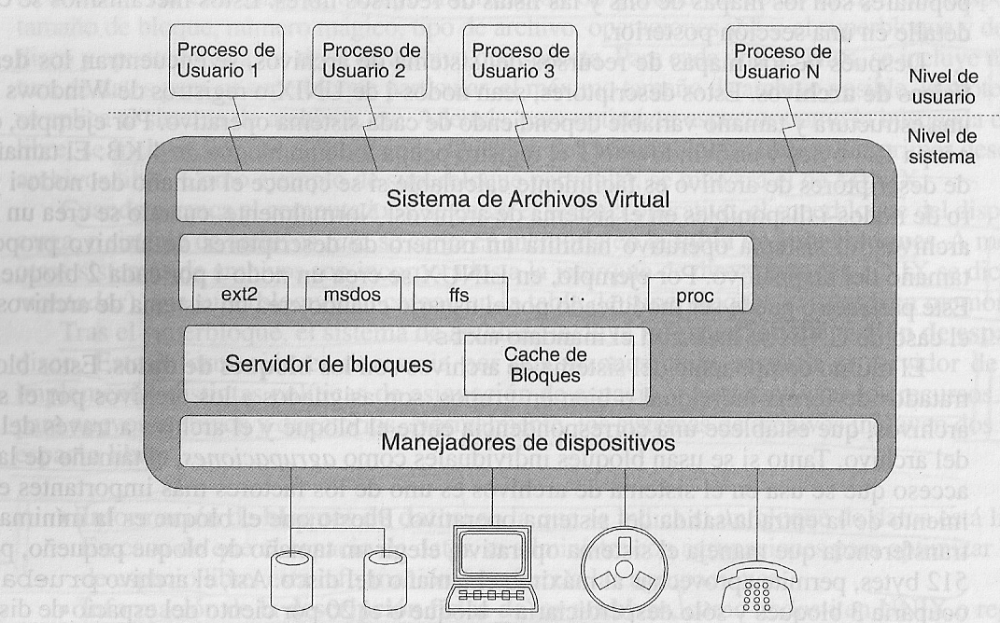
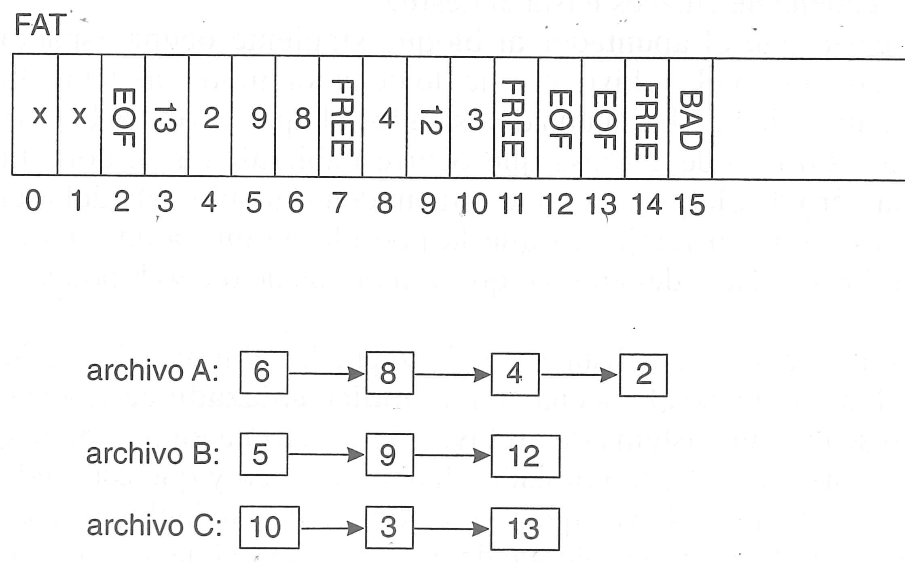
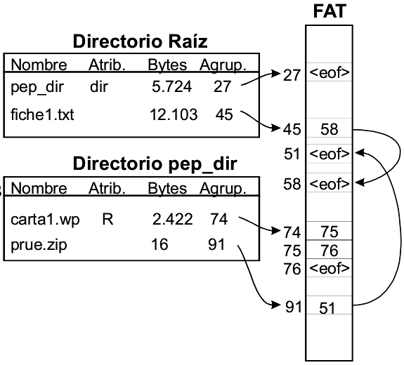

Tema 6: Sistemas de ficheros y discos
Programación y Administración de Sistemas
(2023-2024)
1 Objetivos y evaluación
Objetivos
Distinguir entre discos duros rígidos y discos duros SSD.
Enumerar las partes de las que está compuesto un disco duro rígido.
Explicar qué es el sistema de archivos de un sistema operativo y cómo funciona.
Analizar la estructura del sistema de archivos: bloques de carga, bloques de datos, metainformación, superbloques, descriptores físicos, mapas de bits, listas de recursos libres…
Dividir el servidor de archivos de un sistema operativo en los componentes que lo forman: sistema de archivos virtual, módulo de organización de archivos, servidor de bloques y manejadores de dispositivos, analizando la función de cada uno.
Establecer la distintas opciones para implementar la asignación de bloques (con las distintas alternativas ofrecidas por los diferentes sistemas de archivos).
Enumerar mecanismos para gestión del espacio libre.
Enumerar y explicar mecanismos para el incremento de prestaciones mediante el uso de caché.
Evaluación
Cuestionarios objetivos.
Pruebas de respuesta libre.
2 Introducción
Introducción
La función principal de un disco duro es almacenar la información del PC cuando no se encuentra conectado a la corriente eléctrica.
También puede servir de extensión para la memoria RAM, gracias al mecanismo de memoria virtual (intercambio).
En la actualidad, existen dos tecnologías que conviven en los discos duros: la de los SSD y la de los discos rígidos.
Los discos rígidos funcionan de forma parecida a un tocadiscos, mientras que los discos SSD (Solid State Disk o, mejor, Solid State Drive) utilizan una memoria formada por semiconductores para almacenar la información (similar a pendrives o tarjetas de memoria).
Discos rígidos

Discos rígidos vs sólidos

Discos rígidos
¿De qué esta compuesto un disco duro rígido?
Plato: Cada uno de los discos que se encuentran apilados en su interior, cubiertos de un material magnetizable (de aluminio o cristal). La escritura cambia el estado de este material.
Cabezal: es un brazo que se mueve sobre el plato. Como los discos giran, permite acceder a cualquier punto de los mismos.
Pista: Se trata de cada una de las líneas esféricas que se pueden formar sobre cada plato.
Cilindro: Conjunto de varias pistas que se encuentran una encima de otra.
Sector: Cada una de las divisiones que se hace de la circunferencia que se forma en el disco. Normalmente en un sólo sector tendremos varios cientos de bytes de información.
Indicando el cilindro, la cabeza y el sector podemos acceder a cualquier dato del disco.
Discos rígidos: escritura
Archivos
Archivo: unidad de almacenamiento lógico no volátil que agrupa un conjunto de información relacionada entre si bajo un mismo nombre.
Un archivo debe poseer un nombre que permita acceder al mismo de forma unívoca.
Este nombre incluye una extensión (
.txt,.zip…) que identifica el tipo de archivo (no significa que lo sea obligatoriamente)Existen códigos de identificación de tipo de archivos que usan herramientas como
file(más en wikipedia).El acceso a un archivo puede ser secuencial (para acceder a una posición hay que acceder antes a las anteriores) o directo/aleatorio (se puede acceder a cualquier posición).
3 Sistema de Ficheros
Sistema de Ficheros o Archivos
Sistema de Archivos/Ficheros (SA/SF)
Organiza la información de los dispositivos de almacenamiento secundario (disco duro, disco extraíble, DVDs, CDRom…).
El dispositivo se divide manera lógica para que quede organizado de una forma inteligible para el SO.
La división se hace a múltiples niveles:
Particiones o volúmenes.
Bloques.
Agrupaciones.
Sistema de Archivos: partición
Partición: porción de un disco a la que se le dota de una identidad propia y que se manipula como un entidad lógica independiente.
Las particiones deben formatearse para que se creen las estructuras necesarias que permiten al SO manipular el disco.
Puedes verlas con
gparted.

Sistema de Archivos: bloques
Bloque: agrupación lógica de sectores físicos del disco, la cual supone la unidad de transferencia mínima que usa el SA.
Agrupación: conjunto de bloques gestionado como una unidad lógica de almacenamiento.
El tamaño de bloque es un parámetro decisivo que afecta a la eficiencia del acceso a disco y a la fragmentación del mismo.
Tamaño de bloque pequeño: Mayor número de operaciones de Entrada/Salida (E/S) para acceder al archivo. Menor fragmentación.
Tamaño de bloque grande: Menor número de operaciones E/S para acceder al archivo. Mayor fragmentación.
Puedes ver el tamaño de bloque con
stat -f .
Efecto del tamaño de bloque
Del estudio The impact of blocksize on Persistent Disk performance.
Estructura del Sistema de Archivos
Sistema de Archivos: boot
El bloque de carga (boot o Volume Boot Record) contiene código ejecutado al arrancar el ordenador por el iniciador ROM utilizando esa partición.
El MBR apunta al VBR de la partición activa.
Se suele incluir en todas las particiones (aunque no contengan el SO) para así mantener una estructura uniforme.
Se añade un número mágico, el cuál será comprobado por el iniciador ROM para demostrar que el bloque de carga es válido.
Sistema de Archivos: metainformación
Metainformación: super-bloques, FAT, nodos-i, mapas de bits, descriptores físicos…
Describe el SA y la distribución de sus componentes.
Es necesaria para poder acceder a los datos.
Sistema de Archivos: superbloque
Superbloque: características del SA, posición de los distintos elementos, tamaño…
Se mantiene una serie de información común para todos los SAs y una entrada característica para cada tipo de SA.
Al arrancar la máquina, los superbloques de todos los SAs que son cargados se mantienen en memoria.
Información de discos, particiones y superbloques
- Listado discos y particiones:
sudo fdisk -lygparted - Información superbloque:
sudo dumpe2fs /dev/nvme0n1p3|less
sudo dumpe2fs /dev/nvme0n1p3|grep -i super¿por qué está copiado varias veces el superbloque a lo largo del disco?
Ejemplo superbloque
Filesystem volume name: UBUNTU
Last mounted on: /
Filesystem UUID: eca06da0-02e9-4c2b-9fe0-1fd03743502c
Filesystem magic number: 0xEF53
Filesystem revision #: 1 (dynamic)
Filesystem features: has_journal ext_attr resize_inode dir_index filetype needs_recovery extent 64bit flex_bg sparse_super large_file huge_file dir_nlink extra_isize metadata_csum
Filesystem flags: signed_directory_hash
Default mount options: user_xattr acl
Filesystem state: clean
Errors behavior: Continue
Filesystem OS type: Linux
Inode count: 5120000
Block count: 20480000
Reserved block count: 1024000
Free blocks: 4982222
Free inodes: 4358040
First block: 0
Block size: 4096
Fragment size: 4096Sistema de Archivos: descriptores
Descriptores físicos de archivos: nodos-i, registros de Windows-NT…
Describen cada uno de los archivos almacenados.
Tienen una estructura y tamaño muy dependiente del SO.
El número de descriptores debe ser proporcional al tamaño total del disco.
Incluyen: tamaño, apuntadores a los bloques del archivo, permisos, propietarios…
Sistema de Archivos: descriptores
Información inodos fichero:
$ ls -i /etc/passwd
24352 /etc/passwd
$ stat /etc/passwd
Fichero: /etc/passwd
Tamaño: 3042 Bloques: 8 Bloque E/S: 4096 fichero regular
Dispositivo: 10303h/66307d Nodo-i: 24352 Enlaces: 1
Acceso: (0644/-rw-r--r--) Uid: ( 0/ root) Gid: ( 0/ root)
Acceso: 2023-04-10 11:25:47.835159901 +0200
Modificación: 2023-03-27 17:39:11.826105357 +0200
Cambio: 2023-03-27 17:39:11.826105357 +0200
Creación: -Gestión del espacio libre
Gestión del espacio libre: distintos mecanismos permiten gestionar el espacio libre. Veremos más al final del tema.
Se pueden utilizar mapas de bits o listas de recursos libres.
Gestión de dos tipos de recursos:
Mapas de bloques: indican qué bloques (o agrupaciones) están libres.
Mapas de descriptores de archivos: indican qué descriptores de archivos (nodos-i, registros…) están libres.
Bloques de datos: es dónde se almacena realmente la información.
sudo dumpe2fs /dev/nvme0n1p3|less4 Servidor de archivos
Servidor de Archivos
Servidor de Archivos: es el componente del SO que se encargará de gestionar el acceso a archivos.
Se sigue una filosofía de organización en capas.
Los niveles inferiores proporcionan servicios a los niveles superiores, y en cada nivel se aumenta la abstracción de las operaciones.
Capas del servidor de archivos
Sistema de archivos virtual (+ abstracto).
Módulo de organización de archivos.
Servidor de bloques.
Manejadores de dispositivos (- abstracto).
Esquema Servidor de Archivos

Sistema de archivos virtual (I/II)
- Sistema de archivos virtual (Virtual File System):
Proporciona la interfaz para las llamadas de E/S que deseen realizar los procesos de usuario, interactuando con el módulo de organización de archivos.
Cumple las funciones de manejo de directorios, gestión de nombres, servicios de seguridad, integración de archivos de distintos dispositivos/particiones…
Por ello, es necesario utilizar una estructura adicional (nodos virtuales o nodos-v en UNIX), que incluye las características comunes a todos los sistemas de archivos y un enlace al descriptor de archivo particular (nodo-i o registro).
Sistema de archivos virtual (II/II)
- Sistema de archivos virtual:
Hay operaciones genéricas que se pueden realizar en cualquier SA (caché de nombres, gestión de nodos virtuales…).
Otras operaciones deben ser implementadas independientemente para cada tipo de SA.
Los nodos virtuales contienen la siguiente información:
Atributos del archivo.
Puntero al nodo-i real.
Punteros a funciones que realizan las operaciones genéricas de cualquier SA.
Punteros a funciones que realizan las operaciones propias del SA concreto.
Módulo de organización de archivos
- Módulo de organización de archivos:
Se implementa por separado para cada tipo de SA.
Relaciona la imagen lógica de un archivo con su imagen física, traduciendo direcciones lógicas (contiguas) del archivo a las direcciones físicas (normalmente dispersas) del dispositivo.
Se prestan los servicios de gestión de espacio libre y manejo de descriptores de archivos físicos (no virtuales).
Este nivel se basa en la información de los nodos-i y utiliza los servicios del servidor de bloques para realizar las operaciones correspondientes.
Servidor de bloques
- Servidor de bloques:
Este nivel emite los mandatos genéricos para leer y escribir bloques en los manejadores de dispositivo (E/S de bloques).
Se traducirán en llamadas al manejador específico del SA.
En este nivel se realiza la caché de bloques.
Manejador de dispositivos
- Manejadores de dispositivos:
Son específicos para cada hardware.
Traducen órdenes de E/S de alto nivel a un formato que pueda entender el dispositivo (dependiente del hardware).
Funcionamiento esquemático servidor archivos
Linux Storage Stack Diagram

Linux Storage Stack Diagram (PDF)
Fuente thomas-krenn
5 Directorios y enlaces
Directorios
Un directorio es un fichero con un formato determinado.
El contenido de un directorio es una serie de entradas (registros), una por cada fichero contenido en él.
Cada registro tiene, al menos, el nombre del fichero y el puntero al descriptor físico correspondiente.
Directorios: resolución nombre
Directorios: resolución nombre
La ruta
/users/luis/clavesse interpreta de forma recursiva:Traer a memoria bloque del i-nodo 2 (i-nodo raíz, conocido).
Se busca dentro
usersy se obtiene el i-nodo 342.Traer a memoria bloque del i-nodo 342.
Se busca dentro
luisy se obtiene el i-nodo 256.Traer a memoria bloque del i-nodo 256.
Se busca dentro
clavesy se obtiene el i-nodo 758.Al leer el i-nodo 758, se detecta que es un fichero y accede a los datos del archivo.
Leer los bloques del fichero.
Directorios: ¿Cuándo parar?
¿Cuándo parar?
No se tienen permisos.
Se ha encontrado el i-nodo del archivo.
No se encuentra el siguiente elemento de la ruta.
Directorios
La llamada
open()termina con la lectura del i-nodo.La verificación de permisos se hace con los datos del i-nodo.
Un directorio no es un i-nodo:
Enlaces
6 Asignación de bloques
Asignación de bloques
Asignación: cómo se hace la correspondencia entre los bloques físicos del disco y los bloques lógicos del archivo.
Mecanismos de asignación: Asignación de bloques contiguos:
- Todos los bloques del archivo se encuentran contiguos en el disco:
- Muy sencillo de implementar.
- Accesos secuencial y directo muy rápidos.
- Necesario saber el tamaño del archivo al crearlo.
- Fragmentación del disco.
- Para añadir datos al archivo, puede que haya que moverlo.
- Por todo ello, no se utiliza salvo en el caso particular de discos ópticos.
Mecanismos de asignación
Mecanismos de asignación: Asignación de bloques no contiguos:
- Los bloques del archivo se encuentran en cualquier posición del disco.
- Se produce menos fragmentación el primer bloque asignado es el primero que hay libre.
- Es necesario traducir el número de bloque lógico al número de bloque en el dispositivo.
- Es la opción utilizada en la mayoría de SOs.
Para tener constancia de qué bloques no contiguos pertenecen a cada archivo, se utilizan listas enlazadas o índices (que pueden ser multinivel).
ISO9660: Inicio y tamaño (fichero contiguo).
SF MS-DOS: FAT (fichero enlazado).
SF UNIX: i-nodo (fichero indexado). NTFS: Registro Windows (fichero indexado).
Lista enlazada
Cada bloque tiene un apuntador al siguiente bloque que seguiría en el archivo.
El descriptor del archivo solo debe incluir la referencia al primer bloque.
- El acceso secuencial es muy rápido.
- El acceso aleatorio a un bloque concreto de un archivo es muy costoso.
- Cada bloque incluye un apuntador que aumenta su tamaño (y complica el cálculo de espacio libre).
- La pérdida de un bloque supone perder el archivo completo.
Tabla de asignación de archivos (FAT)
Tabla de asignación de archivos:
Es una variación del método lista enlazada.
Los apuntadores se almacenan en una tabla independiente de los bloques (File Allocation Table, FAT).
La tabla posee una entrada por cada agrupación (clusters) de bloques del SA (¡de otro modo la FAT ocuparía mucho espacio!).
La FAT ocupará un espacio prefijado en la partición.
Descriptor fichero incluye su primera posición en la tabla.
Acceso aleatorio al archivo: recorriendo la tabla y accediendo a los grupos de bloques hasta llegar al final del fichero (Technical details of FAT, Wikipedia).
La tabla se aloja en caché para mejorar las prestaciones y se mantiene una copia doble en el disco para mayor fiabilidad.
Tabla de asignación de archivos (FAT)

Tabla de asignación de archivos (FAT)
FAT de 12 bits: 4K agrupaciones.
FAT de 16 bits: 64K agrupaciones.
FAT de 32 bits: \(2^{28}\) agrupaciones (solo usa 28 bits). Tamaño de fichero en 32 bits. Tamaño máximo \(2^{32} -1 = 4GB -1\)
Más información File System Functionality Comparison

Índices
Los punteros a los bloques están juntos y contiguos en una localización concreta Bloques índice.
Cada archivo tiene un bloque índice.
Para buscar el \(i\)-ésimo bloque de un fichero, buscamos la \(i\)-ésima entrada en su bloque índice.
- Buen acceso directo.
- Se evita la fragmentación.
- ¿Tamaño del bloque índice? debe fijarse un número de entradas y hay que reservar espacio para todas ellas.
- Limitamos el tamaño máximo de los archivos.
Índice multinivel
Consiste en introducir \(n\) niveles de apuntadores, de manera que los apuntadores del descriptor apuntan a otros.
Índice multinivel de nivel 1: el bloque índice apunta a otros bloques índices que finalmente apunta a un bloque de datos del fichero.
Evita tener que prefijar el tamaño del bloque índice (podemos poner apuntadores a NULL).
El bloque índice tendrá un número pequeño de entradas.
Cada nivel, supone un acceso a disco adicional.
Para archivos pequeños, se desaprovechan muchos bloques índice.
Esquema híbrido: nodos-i
Solución UNIX Esquema híbrido
Por cada nodo-i incluir 15 punteros:
Punteros directos a los 12 primeros bloques (para archivos pequeños). Nota: la siguiente figura indica 10 erróneamente.
Puntero a un bloque índice de primer nivel (donde encontraremos punteros a bloques).
Puntero a un bloque índice de segundo nivel (donde encontraremos punteros a punteros a bloques).
Puntero a un bloque índice de tercer nivel (donde encontraremos punteros a punteros a punteros a bloques).
Bloques del disco: bloques de datos o bloques índice.
En ext4 y en NTFS existen los extents (bloques índice especiales que marcan una zona contigua del disco “numeroBloqueInicial, numeroBloques”).
Asignación de bloques: indexado multinivel
Asignación de bloques: indexado multinivel Ext2
7 Gestión del espacio libre
Gestión del espacio libre
Gestión del espacio libre: se necesita para asignar espacio a los archivos nuevos o a los que se les desea añadir datos.
Se mantienen mapas de recursos, implementados como mapas de bits o listas de recursos libres.
Más detalles y técnicas concretas en Free space management in Operating System

Gestión del espacio libre: Mapas de bits
Se incluye un bit por recurso (descriptor de archivo, bloque o agrupación), que será 1 si el recurso esta libre y 0 en caso contrario.
- Muy sencillo de implementar y de usar.
- Si disco poco fragmentado bloques libres al final, búsqueda muy eficiente.
- Si disco fragmentado búsqueda más costosa.
- Espacio adicional requerido por el mapa.
FAT: la propia tabla actúa como mapa de recursos.
exFAT: sistema híbrido donde los archivos se localizan con la lista enlazada pero además existe un mapa de bits para gestionar el espacio libre.
Gestión del espacio libre: Listas
Mantener una lista de apuntadores a los recursos libres.
Al ocupar un recurso lo borramos de la lista.
- Muy eficiente para discos muy llenos y fragmentados.
- Disco con mucho espacio libre Ineficiente debido a que hay que cargar la lista.
Solución Incluir número de bloques libres consecutivos en la lista (siguiente imagen).
Gestión del espacio libre: FAT + lista enlazada
8 Incremento de prestaciones
Incremento de prestaciones
Acceso a memoria orden de nanosegundos.
Acceso a disco orden de milisegundos.
Almacenamiento intermedio de los datos
Mantener una caché de datos en Memoria Principal (MP).
Aprovecha la proximidad espacial y temporal en las referencias a los datos accedidos.
Caché de nombres: lista
{nombre,nodo-i}. Si se vuelve a acceder al archivo, no hay que hacer toda la búsqueda del nodo-i.Caché de bloques: colección de bloques leídos o escritos recientemente. Si se vuelve a acceder a ese bloque, no hay que cargarlo de nuevo.
Caché de bloques (I)
Si el bloque está en MP, se escribirá o leerá en MP.
Posteriormente, se moverán los bloques de MP al dispositivo.
Si la caché está llena, hay que eliminar algún bloque:
Políticas de reemplazo: First In First Out (FIFO), Most Recently Used (MRU), Least Recently Used (LRU)…
Lo más común es LRU: aprovecha que los bloques no utilizados durante mucho tiempo, posiblemente no volverán a ser utilizados. Peligroso si hay un fallo del SA.
Caché de bloques (II)
Bloques sucios (cambiados en caché pero no en el disco). Distintas políticas a la hora de mantener la coherencia:
Escritura inmediata (write-through) Siempre actualizado.
Escritura diferida (write-back) Actualizamos cuando el bloque salga de la caché.
Escritura periódica (delayed-write) Establecer un tiempo periódico para las actualizaciones. Compromiso entre rendimiento y fiabilidad. Reduce la extensión de los posibles daños por caídas.
Se puede distinguir entre bloques especiales (directorios, nodos-i o bloques índice) y bloques de datos. Bloques especiales write-through.
No se debe quitar un disco del sistema sin antes volcar los datos de la cache (comando
sync).
9 Referencias
Referencias
Evi Nemeth, Garth Snyder, Trent R. Hein, Ben Whaley y Dan Mackin. Unix and Linux system administration handbook. Capítulo 20. Storage. Addison-Wesley. 5th Edition. 2018.
Geeks for geeks. File Allocation Methods. 2023.
Geeks for geeks. Free space management in Operating System. 2023.
Jacob Schrum. File Systems 2: File Allocation (VIDEO). 2016.
Fernando Pérez-Costoya, Jesús Carretero-Pérez y Félix García-Carballeira. Problemas de Sistemas Operativos. De la base al diseño. Tema 8. Archivos y directorios. Sección 8.4. Sistemas de Archivos. Mc Graw Hill, Segunda Edición, 2003.